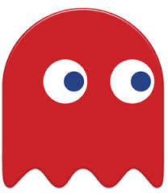
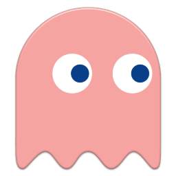
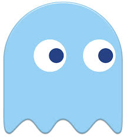
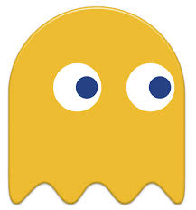

PERSONAJES DE PACMAN
Pacman
Es el personaje principal
del juego que su mision
es tratar de conseguir la
mayor puntuacion comiendo
las bolitas amarillas
sin que los fantasmas
se lo coman a el.

Blinky
Fantasma Rojo despues
de que Pac-Man
coma cierta cantidad de
puntos, su velocidad
incrementa considerablemente.

Pinky
Fantasma Rosa rodea
los obstaculos al
contrario de las
manecillas del reloj.

Inky
Fantasma Azul no es
tan rapido como
Blinky pero actua de
manera erratica asi
que es dificil predecir
como va a reaccionar.

Clyde
Fantasma Amarillo el
no persigue a Pac-Man,
sino que deambula sin
una ruta especifica.